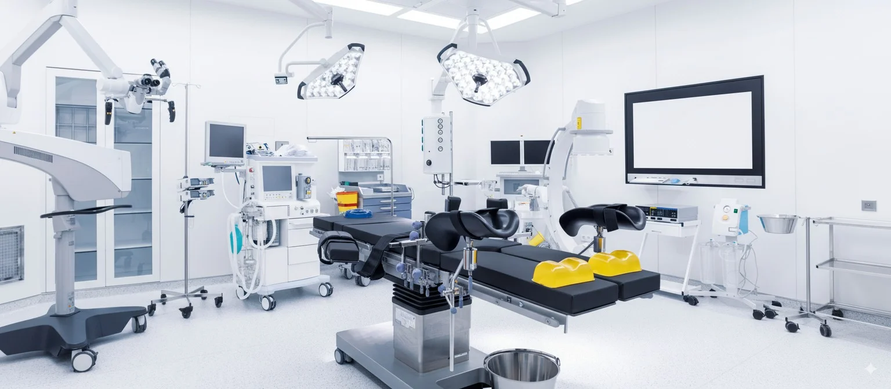

Our Medical Equipment Services
Equipment Repair and Preventive Maintenance Program (PM)
Expert repair services for critical medical equipment. Our certified technicians ensure reliable operation with minimal downtime for:
- Patient Monitors & ECG Machines
- Hospital Beds & Stretchers
- Respiratory Equipment & Ventilators
- Imaging Equipment & C-Arm
- Infusion Pumps & Surgical Equipment
- Defibrillators & Emergency Equipment
